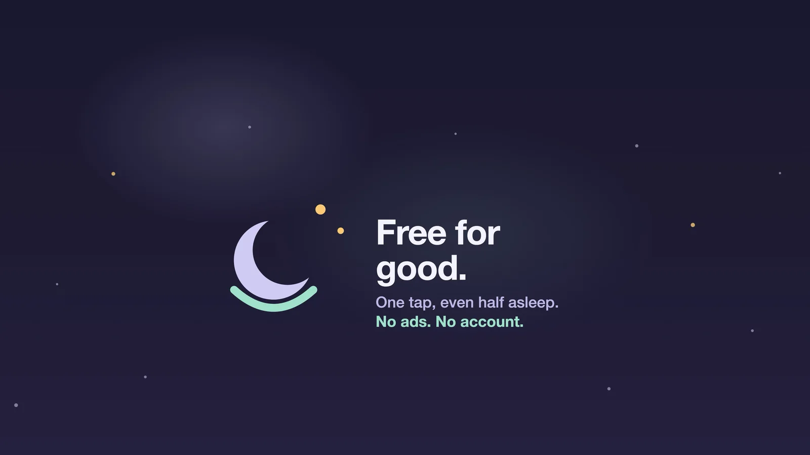
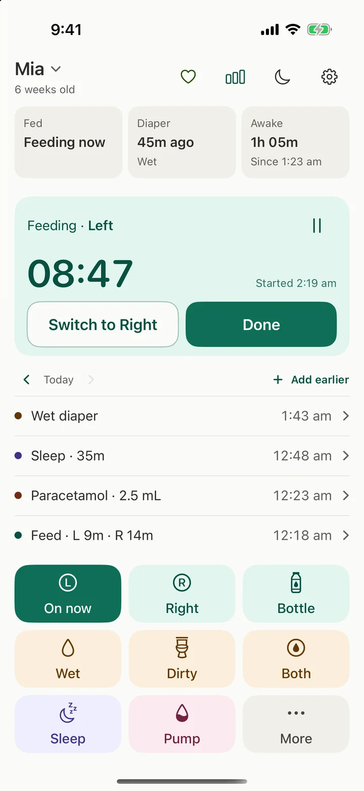
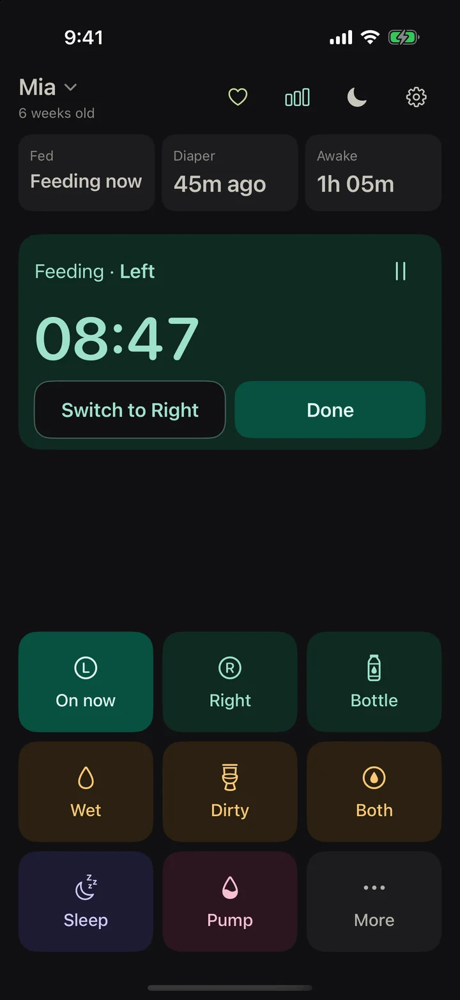
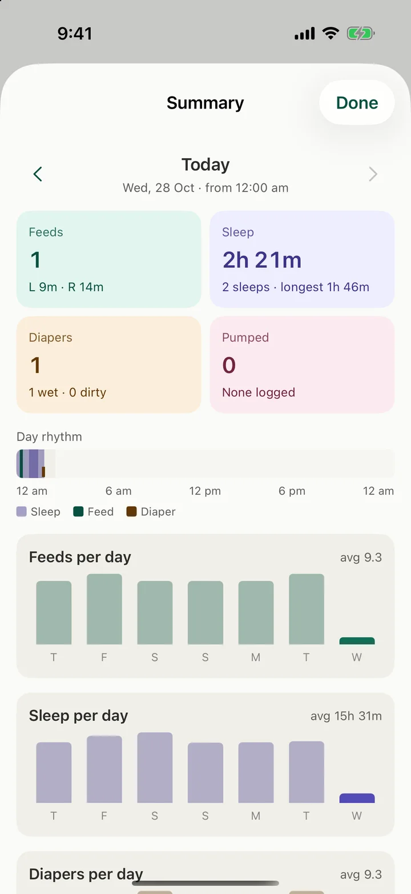
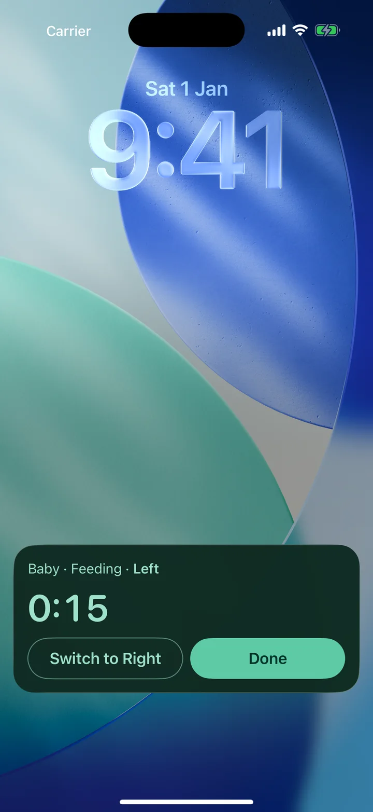
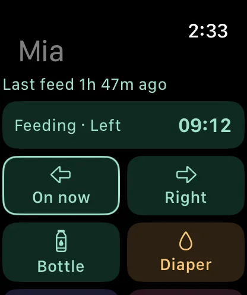
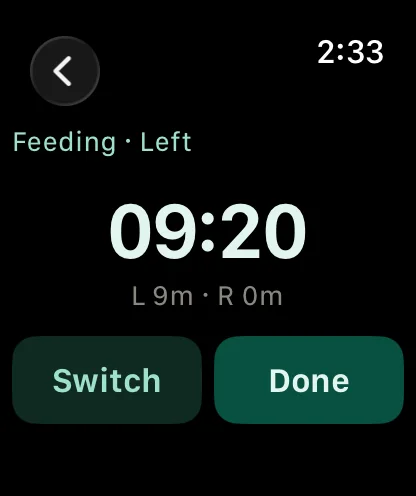
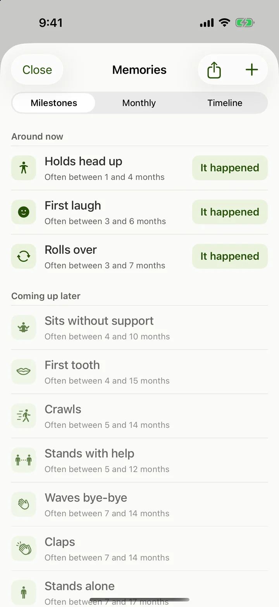

iOS & Apple Watch — Personal Product · Live on the App Store
Mooncradle — A Baby Log That Is Free for Good
A feed, sleep and diaper log built for one tap at 3 am, shared between parents without an account. No ads, no subscription.

Built for My Brother’s 3 am
I became a chachu, an uncle, in 2026. Listening to my brother and sister-in-law talk about the first weeks, the same complaint kept coming back: the apps meant to help them track feeds and sleep were getting in the way.
Mooncradle is my answer. It logs feeds, sleep and diapers in one tap, keeps both parents on the same log, and is free with no ads, no subscription and no account to create.
I designed it and directed the build end to end. This case study is about the design decisions: who the app is for, what state they are in when they use it, and what that rules out.
What Parents Were Complaining About
Before drawing anything, I read App Store reviews across the category. Four complaints came up again and again:
- Paywalls on features parents need in the first weeks
- Ads and upgrade prompts in the middle of a night feed
- Partner sync that was unreliable or cost extra
- Logs that went missing
In October 2026, one of the most popular trackers moved to subscription-only, and its reviews filled with parents looking for a free alternative. That set the brief: free for good, and dependable on the four things parents were already angry about.
One Tap, Even Half Asleep
The person using this app is holding a baby, has one free thumb, and has not slept properly in weeks. Every decision on the home screen follows from that.
- One tap logs it. Left, Right, Bottle, Wet, Dirty, Sleep and Pump sit on the home screen. There is no form to fill in first.
- Undo, not “Are you sure?” A confirmation dialog costs a tap every time. Undo costs one only when something went wrong.
- No maths. “Fed 2h 10m ago” is always at the top, so nobody has to subtract clock times in the dark.
- Night mode. Between 9 pm and 6 am the screen dims and shows only what matters.
- It remembers the side. The feeding timer knows which side is next and lets you switch mid-feed.



Log a Feed in One Tap
This is the home screen, rebuilt for the browser. Tap anything.
- Tap Left to start a feed, then Switch to Right, then Done.
- Tap Wet, then Undo.
- Tap the moon for night mode.
Simplified demo · nothing is saved
The Phone Is Often Out of Reach
Opening an app is already too much work during a feed. So the parts that matter most live outside it.
- Lock Screen and Dynamic Island. The running timer sits there with Switch and Done buttons, so a feed can be finished without unlocking the phone.
- Apple Watch. Feeds, bottles and diapers can be logged from the wrist. If the phone is out of range, taps wait on the Watch and land later with the right time.
- Widgets and Siri. The same actions are available from the Home Screen and by voice.



Two Parents, One Log, No Account
Partner sync was the complaint I took most seriously, because a log only one parent can see is half a log.
- No Mooncradle account. Sync runs through the family’s own iCloud. There is nothing to sign up for and no server of mine holding a baby’s data.
- Shared in seconds. A partner, grandparent or nanny logs from their own iPhone and everyone sees it.
- Shared timers. One parent can finish a feed the other started, and the log shows who did what.
- Twins and siblings. Each child has their own log, timer and colour, and every confirmation names the child, so nobody logs for the wrong one.
Never “Late”
New parents are anxious enough. The Memories section tracks milestones from first smile to first steps, and its wording was the most debated part of the app.
Milestones show a gentle range, “often between” two ages, and are never marked late. Nothing is red. The ranges can be hidden altogether, and a line of reassurance sits under the list.
There is also a photo a month. The camera shows last month’s photo faintly over the viewfinder, so every picture lines up and the year plays back as one sequence.

Two Failures Worth Keeping
Shared logs vanished for my testers. Builds I installed directly and builds delivered through TestFlight were writing to two separate iCloud databases, so families who had paired on one could not see each other on the other. For an app whose promise is that logs do not go missing, this was the worst possible bug.
The fix went beyond the cause. If a shared log cannot be found, the app now pauses sync and offers “Keep my logs”, so nothing a parent has recorded is ever thrown away. A log that belongs to you re-uploads itself in full.
Apple refused a build over one word. A shortcut description contained the word “Siri”, which is not allowed. It cost a day, and taught me to read the platform’s rules as closely as its design guidelines.
What I’d Do Differently
I would put testers on the same delivery route as real users from the first day. The sync failure came from testing in conditions that no parent would ever be in.
What I would keep is the order of work. The complaints came first, then the person and the state they are in, and only then the screens. Most decisions on the home screen were made by asking what a tired parent with one thumb could manage.
Mooncradle is on the App Store. Get it here ↗